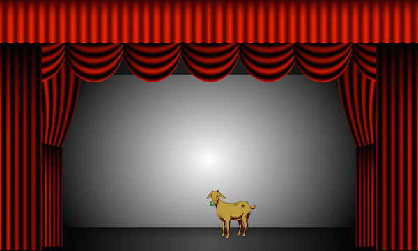
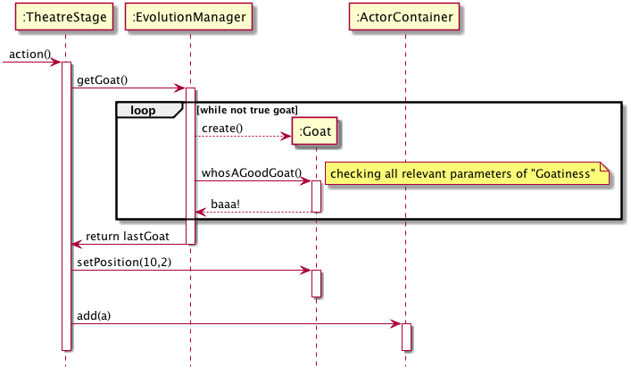
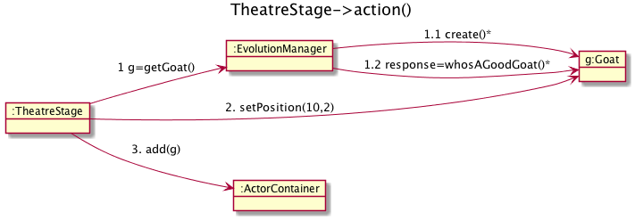
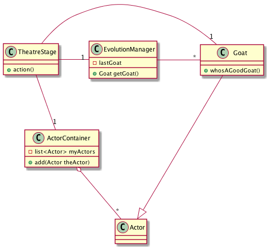
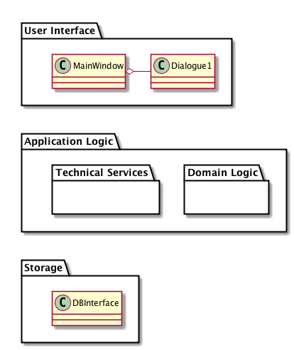

Interactions and Structure
Table of Contents
1 About This Sprint
This sprint discusses how to identify and model interactions between entities in UML interaction diagrams. The sprint also covers how the interaction diagrams produce material that is used to create UML Class Diagrams.
2 User Stories covered in this Sprint
- As a software designer I want to understand how domain concepts interact so that I can select the best way to implement these interactions.
- As a software designer I want to model both the dynamic behaviour as well as the static structure of the application so that I can communicate both to the developers.
- As a software implementer I want to know which methods and attributes each class contains so that I can implement them.
3 Introduction
So you have your system events from the UML system sequence diagrams, and you have an idea of the concepts in the problem domain based on your domain model. Your next step is to figure out what should happen inside the system as a consequence of your system events. UML books like to introduce the concept of an Operation Contract at this stage, and spend an impressive amount of time defining all the attributes that you should fill in for each contract. I will not go this far. I will not even require you to write any contracts. As an analysis tool, they are quite ok, however.
The takeaway from this sprint is, however, not the actual diagrams. What I want you to realise is that modelling the dynamic behaviour of your system is the key to understanding the static structure. This is the best way to keep your system lean. Yes, you can start with the static structure and model what you think will be needed. You will (a) get much of it wrong and have to go back and fix it later, and (b) add plenty of stuff that will never be used as you thought, so you will add the methods you really need when you develop, and then your design documentation is no longer up to date with what the code does.
TL;DR: Use the dynamic behaviour of your system to extract the least possible amount of static structure, to keep your design relevant and lean.
3.1 Contracts
An operation contract simply documents the system operations. This is ok, and you should really think of doing something like this anyway. If you use e.g. Doxygen or the equivalent for your language, you document your system operations in your code so that callers of a function immediately can get an overview of the operation, its parameters, and its return values.
What I would like to focus on, however, is that in this documentation you also list preconditions and – even more importantly postconditions. The preconditions is simply a list of conditions that must be met before this operation can be called. For example, to return change in a cash machine, there must be an ongoing sale and a payment must have been entered.
The postconditions list what should have happened inside the system as a result of the operation. This is not a narrative description of “first A happens, then B, and finally C”. It is simply a description of the final state. Think of it as a stage-and-curtain model. The system is in one state. A curtain goes down and the operation executes. When the curtain is raised again, you note the changes.

To identify what may have changed, you look at your domain model. Instances of some of the concepts from your domain model are involved in the operation (if not, your domain model is incomplete and should be revised). For these instances, the following may occur:
- an instance of a concept may be created
- an instance of a concept may be deleted
- an attribute of an instance may change value
- an association betwen two instances may be formed
- an association betwen two instances may be broken
It is good form to write this in past tense (to remind you that you are only describing what has already happened):
- An instance of
Goatwith the namegHarrywas created. - The (x,y) position of the goat
gHarrywas set to (10,4). - An instance of
GoatFoodwith the namegfwas created. gfwas associated withgHarry.- The location of
gf:GoatFoodwas set to the location ofgHarry:Goat’s mouth.
Note that we still don’t know who does all of this. We can guess that it is in fact gHarry that fetches the gf:GoatFood and puts it in his mouth while going to stand at position (10,4), but we do not know. We also do not know what else may have happened. Where did gHarry find the food? Was there a clown quartet that rolled a wheelbarrow full of GoatFood on stage and fed it to gHarry while riding unicycles? Or did we initially create 500 animals on stage and used genetic algorithms to grow and breed on those that most looked like a goat with food in its mouth? We do not know.
What we do know is that those concepts from the domain model that were used in this contract (and all other contracts) are those that we should model as classes. The attributes that were changed should be added to those classes with the right types. The associations formed or broken should be modelled in our class diagram. We also have an end-state that we can work towards in our interaction diagrams.
This here is the specific point from where I am going to get exam answers using Goats in the most horrible ways imaginable. I know this, and yet I wrote this example. What the hell is wrong with me?
3.2 Interaction Diagrams
UML introduces two types of Interaction diagrams, namely Sequence Diagrams and Collaboration Diagrams. These express the same thing and so you can use either one. When I was once a young and budding student we only had collaboration diagrams, and for a long while I favoured them because you are able to express more in less space. These days, however, I prefer sequence diagrams because it is easier to follow the order in which operations should be called, and are overall clearer to get an overview of.
You have already acquainted yourself with sequence diagrams in the form of System Sequence Diagrams. The difference to these is that in a sequence diagram there is no restriction to view the system as a black box, as you do in a system sequence diagram. Indeed, the whole point is to now open up your black box and study what is going on inside the box. Identify which entities needs to be involved to solve the system event, which methods that should be called, and in what order.

Figure 2: This example is officially getting silly
A collaboration diagram is perhaps easier to work with on a whiteboard; you can hold more lively discussions, add an object and an interaction arrow without having to re-draw your entire model. On paper, it is less space-consuming. The cost of this is, as stated, that it is more difficult to follow the order in which methods are being called. Consider the same Goat-on-Stage example again. Note how the iteration is merely represented as an asterix * after the calls involved, and how the nested calls from within the EvolutionManager::getGoat() call have sub-numbering (1.1 and 1.2, respectively). Imagine if you have a deeper nesting, say four or five levels down, and then try to keep track of whether “1.2.0.3.2” is executed before “1.2.1.3.1” or not.

Figure 3: Evolving a Goat and Putting it on Stage.
One more thing to note here is that you are dealing with objects, i.e. instances of your classes or concepts. You are not modelling the platonic idea of a Goat; you are modelling one specific instance of a goat that is interacting with other specific instances. You are not exercising all methods available in a class; you are calling those specific methods that are needed to solve one particular system event, and you are doing this with the necessary concrete parameters.
Interaction Diagrams model specific objects and their specific interactions.
3.3 Class Diagrams
From the interaction diagrams, that describe the dynamic behaviour of specific objects, we can now start to extract how the class declarations must look like. The methods that are called on an object are placed in the corresponding class of that object. The associations formed are added to the “owner” class of the association (Usually, it is fairly obvious which class should be the owner of an association. Otherwise, decide now and refactor later). Attributes are more difficult to find, since they are not really that prominent in an interaction diagram. If you have made an operation contract, you can get the (post-operation visibly changed) attributes therefrom, but otherwise you will have to guess a bit based on the methods and the responsibilities each object seem to have.
I am loath to continue with the previous example but, in the interest of completeness, here goes. First, create the classes used in the example, and add the methods called on each class and the attributes I can guess at. Then, add the relations between classes where the objects call each other. I like to do it in a particular order, and I am revealing the source code for the UML Class Diagram below to show you this order. You are of course free to work in any order you prefer.

Figure 4: Class Diagram for the Theatre Example
As you also may notice, I am adding the class Actor and introducing an inheritance between Actor and Goat, to keep the interface of the ActorContainer class clean. I am also adding visibility to the methods and attributes. For now, all methods appear to be public, and all attributes are private.
Also note that even though in the interaction diagram I store the returned Goat in the variable g, this variable is only needed for the duration of the action() method and so does not get added to the class. In general, you should try to keep variables in an as limited scope as possible. If you only need them in a block, declare them inside that block. If you only need them in a method, declare them in that method. If you must have them for as long as your object exist, then add them as attributes to the class. If you need them for as long as the system lives you are most likely doing things wrong, but you might consider making them static or adopt the <<Singleton>> pattern. If you need them even longer than that, put them in a database or in a file.
3.4 Moar Classes: Packages
Preferrably I would like to stop now and put the rest into a separate sprint (and kill the Goat-example once and for all). However, this bit needs to be said, and it will actually help you in your diagrams so I need to put at least a small teaser here.
Essentially, you now have all the tools necessary to do object oriented design. What we will focus on more in later sprints is how to use pre-existing solution templates and principles to make a good design using the tools you already know after this sprint. There are, however, two major obstacles that we need to address first:
- You are creating a giant ball of mud, with all your classes thrown into a – for all intents and purposes – random order.
- You will soon not be able to fit all of your design onto one single paper.
To expand on Obstacle #1; What is the significance of that TheatreStage is in the top left corner of Figure 4? What does it mean that Actor is at the bottom of the diagram? Of course, I have made this figure in plantUML, which lays out the diagram in an order itself sees fit (since it uses GraphViz as its backend, the strategy it uses is to minimise the number of arches that needs to cross each other). But even if you are using a CASE tool that allows you to position your classes with absolute coordinates (like a normal drawing program does), there is no inherent semantic meaning in the position of a class.
Enter the UML Package Diagram. In this diagram we take a high-level view of our system and try to define our system as a set of packages, where each package has a well-defined responsibility. We then sort our classes into these packages. This solves Obstacle #2, since we can now move some of the packages to a new page according to some logical principle. If your packages are still too big to fit, you are able to nest packages so that your packages contain more packages.
To further address Obstacle #1, you also need to define the principles according to which you divide the system into packages. Very crudely, this is what you do in your Software Architecture. I say crudely, because there is much more than this to software architectures. For now, let’s stick to one of the more common architecture styles, namely the Layered architecture style, since this fits most interactive systems. In the layered architecture style you divide your system into three parts: User Interface, Application Logic, and Storage.

Figure 5: An example of a Layered Architecture, expressed in an UML Package Diagram
The fact that I tack this on at the end of this sprint introduction may lure you into thinking that you first do your class design and then divide into packages. In fact, you have the overall packages in mind already before you start with the class diagram. To be more precise, you have the “Application Logic” layer in mind. The application logic layer is the layer that mostly contain your class representation of the concepts in your domain model. Since your analysis and your interaction diagrams mostly try to express the behaviour of your system in terms of the interaction between your domain concepts, it is hardly surprising that the class diagram thus derived deals mostly with the application logic needed to represent the problem domain.
Because the focus right now is to determine what from your domain model is relevant for you to solve in your software application, and how to do it, you are not concerned at the moment with the pure software application aspects of the system. This includes the user interface, technical services (for example a key/value store, rule engines etc.), persistent storage facilities, etc.
“But”, an astute reader may think, “does this not just put us back to square one? We still have all our classes in one big package that won’t fit on a single page”. Yes it does. And no it doesn’t, because you can (and you should) nest packages inside your packages. What you should do is thus to think about the high-level packages you have inside your application logic/domain logic package.
To Summarise:
- Right now you will be focusing mostly on the Application Logic Layer
- Start by defining the high-level packages inside the application logic layer
- Then study the dynamic behaviour of your system
- Identify the involved entities (classes), and add these to your class diagram to represent the static structure of your system, along with the methods, attributes, and associations you have identified as necessary.
- Allocate the identified classes to you packages.
- …
- profit!
3.5 Moar Packages!
As your system grows, you will get an increasing number of packages, and you will pretty soon need to worry about how you assign responsibilities and classes to different packages. Chapter 35 in C. Larman, Applying UML and Patterns, 3rd Edition covers some guidelines for this. Remember that they are guidelines and not set in stone. Glancing through the list there are one or two that I disagree with, and we will discuss this in the appropriate lecture.
4 Learning Material
4.1 Book Chapters
- C. Larman, Applying UML and Patterns, 3rd Edition, Chapters:
- Operation Contracts
- Logical Architecture and UML Package Diagrams
- On to Object Design
- UML Interaction Diagrams
- UML Class Diagrams
- Domain Model Refinement
- Package Design
4.2 Screencasts
4.3 Further Reading
5 Experiential Learning
5.1 Sprint Test Plan
Go through the user stories for this sprint and make sure you have a clear understanding of how to solve each of them.
Revisit and update your risks and contingencies section.
Add and/or revise the following items to your glossary:
- Interaction Diagrams
- Sequence Diagrams
- Collaboration Diagrams (Also: Communication Diagram)
- Operation Contracts (Also: Design Contracts)
- Class Diagrams
- Associations
- Aggregation
- Composition
- Class Roles
- Multiplicity
- Dynamic Behaviour
- Static Structure
- Package Diagram
- Software Architecture
- Architecture Style
- Layered Architecture Style
Make sure you understand what each item is, the notation for them, and how to use them either in isolation or together with the other concepts.
5.2 Update Course Backlog
When deciding how to solve a system event in terms of interacting objects, are there better ways for the objects to interact, and are there worse ways? With respect to what?
Are there any other questions that you want answered? Add them, along with a brief strategy for how to find an answer.
6 Sprint Acceptance Tests
You are done with this sprint when:
- You have an understanding of how the dynamic behaviour of the system is used to identify the static structure
- You have an understanding of how you may use your previous analysis, in terms of Use Cases, System Sequence Diagrams, and Domain Model to initiate your design of the dynamic behaviour.
- You have committed/pushed these documents to your project repository.
You may also have
- Updated your Sprint Test Plan
- Updated your Course Backlog